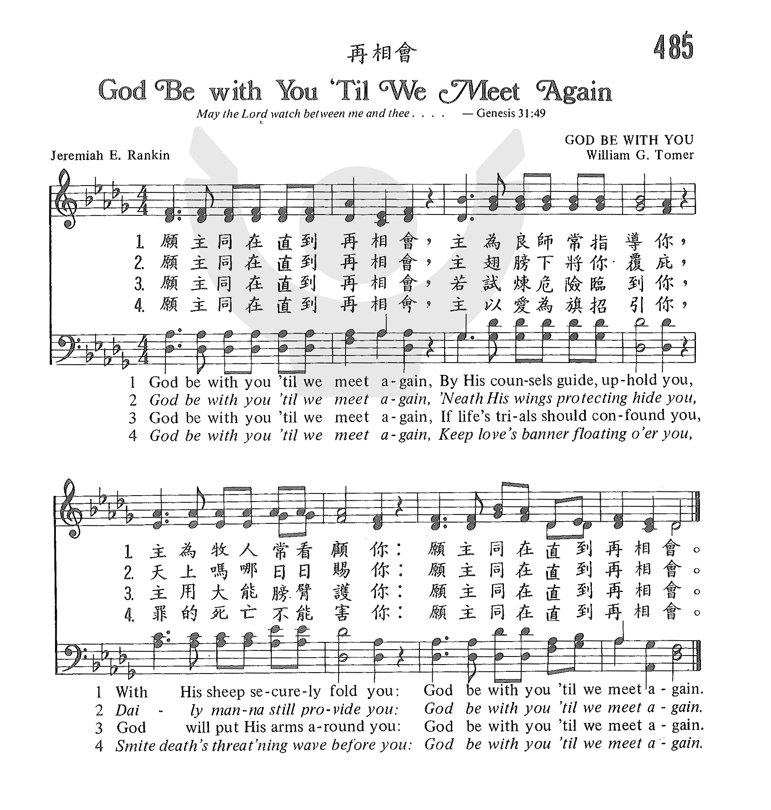

0944 00541 God Be with You Till We Meet Again _ Jeremiah
Eames Rankin 願主同在直到再相會 RANDOLPH ▲
| 簡介
God Be with You Till We Meet Again |
| A North American Congregational
minister wrote this text as a Christian expansion of the root sense of
“good-bye”: God be [with] ye/you. The tune, named for a cousin, was
composed by one of the few 20th century British composers to make a
major contribution to hymnody. The text is
essentially a parting blessing, a prayer that God will guide you (st.
1), feed you (st. 2), and protect you in life and in death (st. 3-4).
Each stanza is framed by the phrase “God be with you till we meet
again.” |
|
|
【再相會】
詩集：生命聖詩，528 |
1
God be with you till we meet again,
By His counsels guide, uphold you,
With His sheep securely fold you,
God be with you till we meet again.Refrain
Till we meet, till we meet,
Till we meet at Jesus’ feet;
Till we meet, till we meet,
God be with you till we meet again.
2
God be with you till we meet again,
’Neath His wings protecting hide you,
Daily manna still divide you,
God be with you till we meet again. [Refrain]
3 God be with you till we meet again,
When life’s perils thick confound you,
Put His arms unfailing round you,
God be with you till we meet again. [Refrain]
4 God be with you till we meet again,
Keep love’s banner floating o’er you,
Smite death’s threatening wave before you,
God be with you till we meet again. [Refrain]
Sing to the Lord: Lillenas Publishing Co., Kansas City, MO, 1993 |
願主同在直到再相會，願主話語再指引你，
如在羊圈主保守你，願主同在直到再相會。
願主同在直到再相會，在主翼下得蒙恩庇，
願上主每天賜嗎哪，願主同在直到再相會。
願主同在直到再相會，當危險驚惶纏繞你，
上主膀臂必懷抱你，願主同在直到再相會。
願主同在直到再相會，主愛旗幟常引領你，
死亡波濤不能傷你，願主同在直到再相會。
歌詞：(台語)
（1）
願主保護咱後會有期，用慈悲引導扶持你；
不論所去逐站導你，願主保護咱後會有期。
（2）
願主保護咱後會有期，雖世上危險的圍你；
權能聖手逐時牽你，願主保護咱後會有期。
（3）
願主保護咱後會有期，雖死河風湧要淹你；
永活聖主的確扶你，願主保護咱後會有期。
（4）
願主保護咱後會有期，用仁愛引導庇佑你；
不論所做施恩予你，願主保護咱後會有期。
（副歌）
到後會、到後會，到後會倘又相見；
到後會、到後會，願主保護咱後會有期。 |
|
https://www.zanmeishige.com/tab/26060.html?songbook=1&index=485


https://hymnary.org/hymn/GG2013/page/692
|
| |
|
http://www.hymncompanions.org/Apr/25/stream.php
盡告耶穌
Tell It to Jesus
在你心中若有世間憂慮，你當告訴耶穌，你當告訴耶穌；
在你心中若有愁苦欷歔，你當快告訴耶穌。
在你心中若有含淚痛苦，你當告訴耶穌，你當告訴耶穌；
在你心中若有諸般罪污，你當快告訴耶穌。
在你心中若有懼怕纏繞，你當告訴耶穌，你當告訴耶穌；
在你心中若有明日煩惱，你當快告訴耶穌。
在你心中若有怕死受苦，你當告訴耶穌，你當告訴耶穌；
在你心中若盼望神國度，你當快告訴耶穌。
（副歌）
你當告訴耶穌，你當告訴耶穌，最有慈愛之耶穌。
你不必疑惑，你不必懼怕，你當快告訴耶穌。
 (請點耳機收聽)
(請點耳機收聽)
這首詩歌是作者欒勤（Jeremiah E. Rankin,1828-1903）根據腓立比書 4:6「應當一無罣慮，….將你們所要的告訴神。」所寫；由勞倫斯（Edmund
S. Lorenz, 見十月六日）譜曲
。

欒勤出生在美國新罕布夏州。 1854年，他自神學院畢業，由公理會按牧；先後出任美國東岸幾個著名的公理教會為牧師；1890年出任著名的黑人大學 Howard
University 為校長。
欒勤編輯過許多福音聖詩集。 他最有名的聖詩是「再相會歌」（God Be with You Till
We Meet Again）。 1882年有一天他在書房查考資料作筆記，他對「再見」的英文（Farewell）,（Good-bye）,和（So
long）的字義細心研究。 他從使徒行傳15:29及23:30「願你們平安」（Farewell）的希臘原文發現有更廣泛的含意：「神使你強壯，堅定，享有健康，喜樂。」於是他寫下了這首詩的第一節，寄給兩位音樂家譜曲。
陶默（William Gould Tomer，1833-1896）當時是一位小學教員，但他所譜的曲與詞意配合無間。
欒勤聽後大喜，完成了這四節十六行的詩，其中一半詞句是「願主同在直到再相會」。
再相會歌 God Be
with You Till We Meet Again
願主同在直到再相會，主為良師常指導你，
主為牧人常養護你，願主同在直到再相會。
願主同在直到再相會，主展全能羽翼護你，
主賜日用糧食養你，願主同在直到再相會。
願主同在直到再相會，生活危機雖侵擾你，
仁愛聖臂必衛護你，願主同在直到再相會。
願主同在直到再相會，愛的旌旗常率領你，
死的冷波不能傷你，願主同在直到再相會。
（副歌）再相會，再相會，靠主恩得再相會，
再相會，再相會，願主同在直到再相會。
（可在聖樂分享的『願主賜福保護你 』CD上（第八首）聆聽此歌之演奏版）
慕迪與孫基時常在佈道會上唱這首詩，因而傳遍歐美，譯成多國文字。 嗣後，全世界基督徒在送別時，都愛唱此歌作為祝頌。
https://behold.oc.org/?p=4808
（六）願主同在直到再相會，愛的旌旗飄揚領你；
死的冷波不能傷你，願主同在直到再相會。
God be with you till we meet again; Keep love’s banner floating o’er you,
Strike death’s threatening wave before you; God be with you till we meet again.
詞：Jeremiah E. Rankin（1828-1904）
曲：William G. Tomer（1833-1896）
1945 年，在日軍集中營裡飽受疾病、飢餓摧殘的戴波樂宣教士，年僅28歲，卻已經在新幾內亞這個宣教的土地上，失去了丈夫、同工。她一無所有，連島上的兩個白色
十字架墓碑也帶不走；站在將要返國的密蘇里號軍艦甲板上，她跟神說：“我再也不要回到這傷心之地！這地方奪去了我生命中所有最珍愛的。”
突然，遠處傳來一群島民的歌聲：“願主同在直到再相會，主為良師常引導你……”這些人都是因著戴波樂夫婦等人所傳講的福音而跟隨了基督。聽著這首聖詩，她的
眼淚撲簌而下，心裡的苦毒解開了，傷痛隨著詩歌得了安慰。這時戴波樂心中清楚地知道，將來有一天，照著神的時間，她將重返這海島，回到這個家中。
有許多年，在神的家中，每一次聚會結束，弟兄姐妹們總喜歡唱“願主同在直到再相會”。
原來“再會”（Good-Bye）意思就是“神與你同在”（God Be with
You），這是多麼甜美的離別祝福！世上有什麼比神的同在更美好呢？就算在地上不能再見，將來在天上必要再相會。那時就要永遠享受主的同在，眾弟兄姐妹也永不再分離。
作者周瑞芳是女中音，大陸事工傳道人。現任教於中華基督教音樂崇拜研究院。請上網聆聽： http://www.cyberhymnal.org/htm/g/b/gbewiyou.htm
，並歡迎每週一上網（華僑廣播中心，“生命廣播網”： www.cgbc.org ）收聽作者主持的聖詩節目“迴聲谷”。
中英文聖詩集參考
英文歌名 Tell
It to Jesus
頌主新歌 373
頌主新歌(中英雙語) 377
教會聖詩 325
新聖詩 145
聖徒詩集 553
聖詩 487
讚美 280
青年聖歌I 168
校園詩歌I 127
英文歌名 God
Be with You Till We Meet Again
頌主新歌 615
教會聖詩 485
生命聖詩 528
聖徒詩歌 702
台語聖詩 446
讚美詩 436
http://www.xueshengshi.com/?p=4540
简介（一） （来源：《岁首到年终》）
Jermiah E. Rankin, 1828 – 1904
愿主耶稣基督的恩，常与你们众人同在。（林前 16:23）
正如月有圆缺，人间总有聚散。在这动荡的世代，为了生活，为了追寻美好的梦想，人们往往要离乡背井，异地而居，时间有长有短，空间有近有远。最感伤的是要与亲朋好友说道别之时刻；最快乐的是，团圆相见的喜悦。
每逢面对秋空皓月，总让人的心绪为之牵动不已，特别中秋月圆，像征着人间的团圆，也含带着人心的一种向往，可是现实的处境却不尽然，而且往往聚少离多，徒增望月兴叹感怀。古诗人说「问君何事轻别离，人生能几团乐月」、「恨君恰是江楼月，暂满还亏，待得团圆是几时？」这些古诗名句，道尽了人间聚散的无奈心情，生离死别乃人之常情，无人能免。基督徒为了神的使命，亦常经历别离之苦。然而我们确知信徒在世只是客旅，永生才是归宿；在世有别离，但在永�琩�没有分散、没有死亡与痛苦。在世虽然漂泊，在永�琱井K要与主及众圣徒长相聚首，那是好得无比的。
本诗作者 Jeremiah Rankin 1828 年 1 月 2 日生于美国 New Hampshire 州的 Thornton，于麻州 Andover
神学院毕业后，历任东岸数个公理会牧师，直到 1889 年担任华盛顿哈佛大学校长为止（该校为美国著名黑人大学）。
据其自述写这首「再相会」的来历如下：「这首诗写于 1882 年，当时想到人们别离时总是要说再见，英文「Good-by」二字的意思即「God With
you」（神与你同在），所以我就以基督徒的信仰，说明愿主与你同在直到再相会的深意而作成此诗。」该诗出版后，首次在他牧养的华成顿第一公理会堂唱颂。
作曲着 William Gould Tomer 1833 年 10 月 5 日生于德国，后移居美国。作曲乃新泽西州的小学老师，南北战争时曾参加战事。1896
年这首诗歌用在他的安息礼拜中。
1 愿主同在直到再相会，主为良师当指导你，主为牧人常看顾你。
2 愿主同在直到再相会，主翅膀下将你覆庇，天上吗哪日日赐你。
3 愿主同在直到再相会，若试炼危险临到你，主用大能膀臂护你。
4 愿主同在直到再相会，主以爱为旗招引你，罪的死亡不能害你。
（副歌）
再相会，再相会，靠主恩得再相会，
再相会，再相会，靠主同在直到再相会。
＊我对天堂不会感到陌生，我的神，我的天父，要把我接到永无止境的福乐里去。── 司布真[
http://pt.fuyinchina.com/m/view.php?aid=4360
兰金(J.E.Rankim 1828-1904)作词（1882）；托默(W.G.Tomer 1833-1896)作曲（1875年）
愿主同在直到再相会，愿主指示领你正路，
在主羊圈看守保护，愿主同在直到再相会。 愿主同在直到再相会，愿主恩翼常常覆庇， 天上吗哪日日赐你，愿主同在直到再相会。 愿主同在直到再相会，生活危难虽侵扰你，
仁爱圣臂必保护你，愿主同在直到再相会 愿主同在直到再相会，仁爱旌旗时常引导， 为你击退死亡洪涛，愿主同在直到再相会。 再相会，再相会在主脚前；
再相会，再相会，愿主同在直到再相会。
这首诗是美国公理会牧师，哈佛大学校长兰金博士写的。兰金牧师曾在一封信上追述写诗的经过。他说：“我写这首诗不是应什么人之请，也没有什么特别的场合促使我写，而是我自己与1882年想到人们别离时总是要说声‘再见’（英文再见“good-bye”二字的意思就是‘愿主与你同在’）而作。
写成第一节后，我抄了两份，分寄给两位作曲家征求歌谱。这两位作曲家，一位是已成名的音乐家，一位却是完全无名且未受到专门音乐训练的小学教师；结果我选择了后者所谱的曲子。我又写了其它几节交与我堂琴师，经他润色后即行复印。首次是在华盛顿市第一公理会会堂唱颂，当时我在该堂作牧师。这首诗的流行，得力与这位作曲者。”
兰金牧师1855年从安多弗神学院毕业，次年被按立为公理会牧师，曾在纽约，佛蒙特及华盛顿等地做牧师，1899年任哈佛大学校长，一生曾编辑过许多福音赞美诗集。
这里所说的无名的作曲者是托默。他原籍德国，后移居美国。作这曲时任小学教师，美国南北战争时参军，复员后在银行任职。同时积极参加教会工作。
这首诗出版后，慕迪与桑基在布道会上时常唱颂。后收入桑基所编的《圣诗与独唱》第494首，因此，许多人在握别时不说“再见”而说“494”，并使这首诗传遍欧美各地，以后也译成各国文字。
《再相会》虽出自公理会，但却成了全世界各教会所最喜爱的离别赞美诗。
有認為天堂中見不到親友，都是靈魂；靈魂是見不到的。
這看法引起我寫這篇小文的興趣，天家�堙A我們將見到已經睡了的至親骨肉，還只是一些看不見，摸不着的靈魂？
翻開聖經，先看創世記五章24節：“以諾與上帝同行，上帝將他取去，他就不在世上了”。以諾被提，聖經說不再在世上，顯然是身體也被提去，不是單單提去靈魂。
申命記三十四章5至6節：“於是耶和華的僕人摩西死在摩押地，正如耶和華所說的。耶和華將他埋葬在摩押地伯毗耳對面的谷中，只是到今日沒有人知道他的墳墓”。摩西死了，他的身首在哪�堙H猶大書說天使長米迦勒曾為摩西的身體與魔鬼爭辯，沒有說到摩西的身體被提。但摩西在主耶穌登山顯榮時現身，彼得雅各約翰都親眼看到（太17:3-4）。
至於以利亞，列王紀下記載：“他們正走着說話，忽有火車火馬將二人隔開，以利亞就乘旋風昇天去了”（王下2:11）。以利亞被提昇天，肯定是身體也昇上去。從以利沙的大喊中，似乎連火車火馬也一起昇上去。在黑門山上，主顯出榮耀的時候，以利亞也和摩西在一起。可見天堂�堣ㄔu是靈魂，是有可以見到的形體。
在福音書中，馬太福音第二十七章記載，當主耶穌在十字架上斷氣時，地大震動，磐石崩裂，墳墓打開，已睡聖徒的身體起來，進入聖城，向多人顯現。路加福音第十六章說到亞伯拉罕和拉撒路，連那財主都可眼見。約翰福音第十四章主對門徒說去預備地方，好接他們到祂那�堙C主所去的地方當然是天堂。在提比哩亞海旁，主還與門徒同吃早餐（約21:12）。主昇天到天父那�堙A是有形有體的；門徒到主那�堮氶A一定與主相似，不可能只有靈魂。老約翰告訴我們：“我們現在是神的兒女；將來如何，還未顯明。但我們知道主若顯現，我們必要像祂，因為必得見祂的真體。”（約壹3:2）
帖撒羅尼迦前書說：“神的號吹響，那在基督�埵漱F的人必先復活。以後我們這活着還存留的人，必和他們一同被提到雲�堙A在空中與主相遇。這樣，我們就要和主永遠同在。”（帖前4:16-17）希伯來書第十一章說亞伯拉罕、撒拉、以撒等人都羨慕一個更美的家鄉，就是在天上的耶路撒泠。彼得前書第一章提醒所有聖徒都有活潑的盼望，可以得着不能朽壞，不能玷污，不能衰殘，為眾人存留在天上的基業。天上的基業怎麼樣？現在不知道；既是為眾人存留，可知不只有靈魂在其間。
啟示錄十一章12節描述，有聲音從天上來，呼喊那兩位先知上到天上。第十九章記載，羔羊婚娶，新婦穿上光明潔白衣裳，天使吩咐約翰寫上，凡被請赴羔羊婚筵的有福了（啟19:7-9）。新婦出席婚筵，不可能只有靈魂。“看哪！神的帳幕在人間，祂要與人同住，他們要作祂的子民。神要親自與他們同在，作他們的神。神要擦去他們一切的眼淚。”（啟21:3-4）既有眼淚，必有身體。
啟示錄二十一章27節：“名字寫在羔羊生命冊上都可進去”；二十二章14節：“那些洗淨自己衣服的有福了，可得權柄能到生命樹那�堙A也能從門�媔i城。”使徒約翰親眼親耳看到和聽到這些啟示，知道在天堂�堙A在阿爸父家中，蒙恩得救重生的人將與二十四位長老並四活物，一同俯伏在上帝的寶座前，高呼阿們，哈利路亞，敬拜主上帝。
這些經文都明顯告訴我們，天堂中不單是靈魂，神照着自己榮耀的形像所造的人也在其中，神的榮耀形像永遠不會廢去，一切信祂的獨生子耶穌基督，重生得救的兒女都將團聚在祂的寶座前（約3:16）。
讀了這許多記載，我滿心安慰，相信你也滿心安慰。在天家�堙A我們將與朝思夕想，親愛的家人，主內弟兄姊妹重逢。不再有生離死別，不再有悲哀哭號，以前的事—地上那些引人犯罪，那些令人煩躁、憂悶和思慮，那些折磨肉體令人疼痛呻吟等事都過去了，大家都回復亞當夏娃被造時滿有神榮耀形像的美好的身體，與復活的主耶穌基督歡聚在阿爸父的家中。
讓我們一同唱：
願主偕你直到再相會
願主恩言常引導你
願主羊圈常保護你
願主同在直到再相會
願主偕你直到再相會
在主翼下得蒙恩庇
願主恩手常扶提你
願主同在直到再相會
再相會 再相會
再相會在主恩中
再相會 再相會
願主偕你直到再相會
（〈願主偕你〉“God Be with You Till We Meet Again”）
https://www.goldenlampstand.org/glb/read.php?GLID=21305
https://hymnary.org/text/god_be_with_you_till_we_meet_again
Notes
Scripture References:
st. 1 = Acts 20:32
st. 3 = Deut. 33:27
st. 4 = Songs of Songs 2:4
Jeremiah E. Rankin (b.
Thornton, NH, 1828; d. Cleveland, OH, 1904) says of his hymn text,
It was written as a
Christian good-bye; it was called forth by no person or occasion, but was
deliberately composed as a Christian hymn on the basis of the etymology of
"good-bye," which means "God be with you." The first stanza was sent to two
different composers, one of musical note, the other [William G. Tomer]
wholly unknown and not thoroughly educated in music. I selected the
composition of the latter, and with some slight changes it was published.
The first stanza was
published in 1880 with the tune GOD BE WITH YOU by William G. Tomer in Gospel
Bells; the 1883 edition of that hymnal included eight stanzas. A
popular hymn, "God Be with You" gained currency through the evangelistic
crusades of Dwight L. Moody and Ira D. Sankey (PHH
73). Modern hymnals usually print only four stanzas.
The text is essentially a
parting blessing, a prayer that God will guide you (st. 1), feed you (st.
2), and protect you in life and in death (st. 3-4). Each stanza is framed by
the phrase "God be with you till we meet again."
A graduate of Middlebury
College, Vermont, and of Andover Theological Seminary, Newton Center,
Massachusetts, Rankin served Congregational churches in New York, Vermont,
Massachusetts, Washington, D.C., and New Jersey (1855-1889). In 1889 he
became president of Howard University, Washington, D.C., a school famous for
its many prominent African American graduates. Rankin issued three volumes
of poetry and hymn texts (of which "God Be with You" is his most
well-known), collaborated in the compilation of hymnals such as The
Gospel Temperance Hymnal (1878) and Gospel
Bells (1880), and published German-English Lyrics, Sacred
and Secular (1897).
Liturgical Use:
Though traditionally used when ministers, missionaries, or others take their
leave from a congregation, this hymn is generally useful as a dismissal
hymn, as a prayer for blessing, and as a sung benediction.
--Psalter Hymnal
Handbook
RANDOLPH (Vaughan Williams)
Composer: Ralph Vaughan Williams (1906)
Published in 38
hymnals

Notes
Though the gospel tune by
Tomer has enjoyed popularity, its overly sentimental character prompted a
search for alternatives. Ralph Vaughan Williams (b. Down Ampney,
Gloucestershire, England, 1872; d. St. Marylebone, London, England, 1958)
composed the distinguished tune RANDOLPH for Rankin's text. The tune was
first published in The English Hymnal (1906). In it Vaughan
Williams matched the repetition of the first and last textual phrases with a
repeated musical phrase.
Though written for unison
singing and best accompanied with clear organ sounds, several stanzas sing
well in parts, possibly even without accompaniment. Or sing the first and
final phrases in unison and the inner phrases in harmony. Because the first
and last phrases are identical for each stanza, this hymn is very effective
when two groups alternate between stanzas, perhaps even facing each other.
Through his composing,
conducting, collecting, editing, and teaching, Vaughan Williams became the
chief figure in the realm of English music and church music in the first
half of the twentieth century. His education included instruction at the
Royal College of Music in London and Trinity College, Cambridge, as well as
additional studies in Berlin and Paris. During World War I he served in the
army medical corps in France. Vaughan Williams taught music at the Royal
College of Music (1920-1940), conducted the Bach Choir in London
(1920-1927), and directed the Leith Hill Music Festival in Dorking
(1905-1953). A major influence in his life was the English folk song. A
knowledgeable collector of folk songs, he was also a member of the Folksong
Society and a supporter of the English Folk Dance Society. Vaughan Williams
wrote various articles and books, including National Music (1935),
and composed numerous arrange¬ments of folk songs; many of his compositions
show the impact of folk rhythms and melodic modes. His original compositions
cover nearly all musical genres, from orchestral symphonies and concertos to
choral works, from songs to operas, and from chamber music to music for
films. Vaughan Williams's church music includes anthems; choral-orchestral
works, such as Magnificat (1932), Dona Nobis Pacem (1936),
and HodieThe English Hymnal(1906), and coeditor (with Martin
Shaw) of Songs of Praise (1925, 1931) and the Oxford Book
of Carols (1928).
--Psalter Hymnal
Handbook

BY C. MICHAEL HAWN
Thomas dorsey
Thomas Dorsey
“God Be with You”
by Thomas A. Dorsey, Artelia W. Hutchins, and Jeremiah Rankin
Songs of Zion, 203 (Complete hymn)
Zion Still Sings, 215 (Abridged refrain)
Abridged Refrain:
God be with you,
God be with you,
God be with you till we meet again.
This hymn of benediction by gospel legend Thomas A. Dorsey (1899-1993), often
labeled as “The Father of Gospel Music” in the African American context, is
second in its popularity following “Precious Lord, take my hand” (1932) in the
composer’s gospel compositions (Kemp, n.p.).

Hymns of Sending Forth
Let us start with the broader context of sung benedictions. The classic
Christian worship service is often divided into four larger sections: gathering,
word, table, sending forth. Congregational singing at the sending forth provides
a liminal experience between corporate worship and the witness of Christians in
the world, a threshold between the gathered body of Christ and their dispersion
as the “salt of the earth” (Matthew 5:13). In addition to encouraging service in
the world, there is often an eschatological tone to these hymns, indicating that
regardless of what happens in life, Christians will meet again in heaven. Many
hymns are used at this point in worship. For example, the popular “Blest be the
tie that binds” (1782) by British Baptist John Fawcett (1740-1817), probably not
conceived as a benediction hymn, is often sung as a hymn of sending forth, at
least the first and last stanzas. Many hymnals end this hymn with the original
fourth stanza:
When we asunder part,
It gives us inward pain;
But we shall still be joined in heart,
And hope to meet again.
On the surface, this would seem to refer to an earthly parting only. However,
the final two stanzas, regretfully less sung, reflect an eschatological theme.
The original last stanza follows:
From sorrow, toil, and pain,
And sin we shall be free;
And perfect love and friendship reign
Through all eternity.
A second hymn, “God be with you till we meet again” (1880) by American
congregational minister Jeremiah Rankin (1828-1904) was written as a hymn for
sending forth. The first stanza implies an earthly parting:
God be with you till we meet again;
By his counsels guide, uphold you,
With his sheep securely fold you,
God be with you till we meet again.
The refrain, however, points to a heavenly reunion:
Till we meet, till we meet,
Till we meet at Jesus’ feet;
Till we meet, till we meet,
God be with you till we meet again.
Textual Authorship: Thomas Dorsey, Artelia Hutchins, and Jeremiah Rankin
The refrain of Dorsey’s hymn cited above, copyrighted in 1940, seems to have
amended Rankin’s earlier text. Both Rankin’s and Dorsey’s hymns appear in many
African American hymnals, implying that both are well known. While Rankin’s hymn
appears in many hymnals, Dorsey’s is found mostly in collections designed for
use in predominately African American communities. African American scholar
Horace Clarence Boyer notes: “‘God be with you’ by Dorsey and Artelia Hutchins
replaced the beloved ‘God be with you till we meet again’ by Jeremiah E. Ranks
[sic] and [composer] William G. Tomer (1832-96) as a benediction song” (Boyer,
1995, p. 183). Furthermore, Boyer indicates the significance of this hymn in
African American worship by observing that many congregations pair “We’ve come
this far by faith” by Albert A. Goodson (1933-2003), a Los Angeles gospel
musician, as an opening processional hymn with Dorsey’s “God be with you” (1956)
as the benediction (Boyer, 1995, p. 206). Tomer’s musical setting usually called
GOD BE WITH YOU (1880) appears in African American hymnals rather than a later
composition RANDOLPH (1906) by English composer Ralph Vaughan Williams
(1872-1958) that does not include the refrain.
The origins and exact authorship of the text are not entirely clear. An
inscription on the score indicates that the song was “Dedicated to Rev. T.S.
Horton, Holy Trinity Baptist Church, Brooklyn, NY” (Luvenia A George Collection,
n.p.). Almost all hymnals ascribe the abridged song – words and music – to
Dorsey only. A very few include gospel singer Artelia W. Hutchins as a
co-composer. Archives indicate that the only publishing relationship Hutchins
had with Dorsey was “God be with you,” although she is mentioned in the
manuscript of Dorsey’s “Don’t you need my Saviour too?” (1931), with the
notation “As sung by Mrs. Artelia W. Hutchins” (Luvenia A George Collection, n.p.).
One archive lists Hutchins as the author of the words (African American Sheet
Music, n.p.). While it appears that Hutchins was involved in the song’s
composition in some way, it is not clear to what extent. Given Dorsey’s fame and
stature and the less rigorous standards for song attribution at the time of the
song’s publication, it is likely that Hutchins’ name was omitted from hymnals
though it appears on archive versions of the more complete score found in
various academic settings.
When the song is abridged in hymnals to only the first part of the refrain, the
correct attribution of the text should most likely be Jeremiah E. Rankin, as his
version was well known in hundreds of hymnals, including African American
collections, before Dorsey’s version was copyrighted in 1940. Rankin’s text
appears in some hymnals with the refrain – “Till we meet, till we meet, / till
we meet at Jesus’ feet” – and in mainline hymnals without the refrain in most
cases. The version with the refrain obviously had more influence on Dorsey’s
version, as his extended refrain begins the same way, but then continues with
additional text:
. . . Till we meet our spirit’s keep.
Till we meet, till we meet,
Our souls in love do keep.
Till we meet, till we meet,
Keep us humble at thy feet.
This author suggests that Hutchins had at least a hand in composing the text of
the longer refrain and stanzas. Though evidently a gospel singer of some renown
in the first half of the twentieth century, her name does not appear as a
composer for any other songs. Since the abridged refrain is virtually all that
appears in hymnals since Songs of Zion (1981), her contribution as a text writer
has been deleted, though solo/choral performances may use her text as found in
stanza one.
This author was not able to locate any biographical information on Hutchins,
with the exception that gospel artist Willie Mae Ford Smith (1906-1994) credits
Hutchins’ rendition of “Let it breathe on me, Let the Holy Ghost breathe on me”
with moving her to an “anointing of the Spirit” – speaking in tongues – that
changed the course of her career (Dargan and Bullock, 1989, p. 251). This was
not likely to have been the well-known “Let it breathe on me” copyrighted in
1949 by African American composer Magnolia Lewis-Butts (1880-1949) if the dates
cited in a second account of this experience are referring to the same event. In
this account, Hutchins is from Detroit, later to become a creative seedbed of
composition and performance in the “Golden Age of Gospel Music.” This
performance, which took place at the 1926 National Baptist Convention, changed
Smith’s focus from a career as a “high soprano” in the classical tradition to an
artist in the emerging black gospel style of this era (Ankeny, n.p.). A
discrepancy that may indicate that the two accounts are not the same is that it
would be highly unlikely that the ritual activity of speaking in tongues,
referred to in the first account, at a National Baptist Convention would have
been permitted under the rigorous legendary musical leadership of “Miss Lucie”
Eddie Campbell (1885-1963). Be that as it may, another indication of Hutchins’
influence and relationship with Dorsey is the Artelia Hutchins Training
Institute, founded in 1950 by Hutchins (NCGCC Departments, n.p.), a part of the
educational outreach programs of The National Convention of Gospel Choirs and
Choruses, founded by Thomas A. Dorsey in 1932 (Grant, 2012, n.p.).
Although the entire hymn with full refrain and three stanzas appears in
the groundbreaking United Methodist supplement Songs of Zion (Nashville, 1981),
virtually all other hymnals include only a truncated refrain and no stanzas. The
printing of the abridged version may have been a practical matter, as the full
refrain is extensive. Additional stanzas would lengthen it considerably at the
end of worship. Two other factors might have influenced the performance practice
of this hymn: first, the congregation could sing the abridged refrain easily by
memory and, second, the first stanza only was performed in a more soloistic/choral
manner on recordings rather than congregational style.
The abridged refrain with only the text, “God be with you till we meet again”
would seem to address only earthly, temporal partings.
However, the first stanza changes the emphasis to the eschatological
realm:
If we nevermore shall meet you,
If we nevermore shall greet you . . .
Keep on working for the Master,
He’ll be with you here and after. . .
The rarely sung second and third stanzas seem to focus on the struggles
of earthly life:
If your way is dark and dreary,
Cast your ev’ry care on Jesus . . .
He’s a comfort when in sorrow,
He’s a joy for you tomorrow. . .
Joy will unfold like a flower,
If you trust Him ev’ry hour . . .
Songs of joy will surround you,
Holy angels sing around you . . .
The St. Paul Church Choir of Los Angeles
The performance practice of hymns in gospel styles is influenced more by
recordings and live performances than by printed scores. A recording by the St.
Paul [Baptist] Church Choir of Los Angeles with soloist and director “Prof.” J.
Earle Hines (1916-1960) put this song on the map and in the voices of African
American congregations. The choir’s first album, “On Revival Day!” (1947), was
an immense success, and “God be with you” was the hit song on the album. Under
Hines’s leadership, the choir’s Sunday evening broadcasts reached over 1,000,000
people in seventeen states (Boyer, 1995, p. 183). The broadcasts and spinoff 78
rpm single recordings by the St. Paul Choir had a major influence on the shape
of African American gospel sound in the mid-twentieth century (Boyer, 1995, p.
206; Cummings, 2009, n.p.). The recording by the St. Paul Choir of “God be with
you” may be heard at the following link: https://www.youtube.com/watch?v=mbrn6fnEosM.
Note that it incorporates only the first part of the refrain and the first
stanza. A recent more upbeat version with gospel singer Jessy Dixon (1938-2011),
featured as soloist on the Gaither Homecoming album “Let Freedom Ring” (2002),
preserves the same general style and follows the same abridged version of the
refrain and first stanza (https://www.youtube.com/watch?v=11JPU4OUQlA). Dixon’s
rendition (some sites mistakenly ascribe authorship to Dixon) reflects both the
influence of the St. Paul 1947 recording and the appreciation of this
composition by a broader “crossover” predominately white gospel audience.
The Music of “God be with you”
Concerning the first publication of the hymn, this author has not had access to
archived copies in educational institutions. Songs of Zion publishes the hymn in
2/4 meter, which, given the scholarship of this collection, indicates that this
was probably the original printed meter. However, African American gospel
performance practice of the era transformed this to the compound meter of 12/8,
which both slowed the song down and gave it more of a “swinging” feeling. The
only other hymnal to maintain the 2/4 musical meter is the Disciples of Christ
Chalice Hymnal (1996), which also publishes the extended refrain but no stanzas.
All other African American hymnals available to this author print the refrain
only in 12/8 meter. Hymnals only publish the four-part choral/congregational
version without a separate piano accompaniment. An analysis of the version
performed by Gwendolyn Cooper Lightner, the pianist for J. Earle Hines and the
St. Paul Church Choir, is available with a partial transcription (Johnson, 2009,
289-290). The influence of Lightner’s rendition was still evident in the 2002
performance by the Gaithers and Jessy Dixon.
Conclusion
This hymn is a powerful example of how the African American community transforms
a germ of an idea from the majority white culture and creates something new. The
growing gospel song movement during the first half of the twentieth century
resulted in an amazing body of new compositions in, for that day, a fresh and
enduring style. It also resulted in the transformation of existing materials, a
borrowing that can be found even in spirituals from the nineteenth century. This
borrowing is not meant to diminish the creativity of African American composers.
To the contrary, it is to highlight the ingenuity of African Americans in the
musical arena and the ability of black composers to expand into new forms of
musical creativity and expression.
While there are several reasons presented above for the abridgement of “God be
with you” in performance and printed collections, the theological ambiguity
between a sending-forth hymn for temporary earthly partings and a separation
(and hopeful reunion) for eternity reflects the existential reality of the
African American community in the United States. Given the systemic oppression
and injustice suffered by black Americans in the centuries since their abduction
and transport to this continent, the reality is that even a temporary parting is
fraught with struggles and uncertainties that may lead to a final separation, a
separation to be hopefully followed by a heavenly reunion. Given the rise of
migrating peoples for reasons of climate change, war, political oppression, and
economic security, and their separation from families and places of origin, this
hymn is a gift from the African American church to all of us. For indeed, citing
the last line of the first stanza, “[God will] be with you here and hereafter.”
SOURCES:
African American Sheet Music Collection, circa 1880-1960, Emory Libraries and
Information Technology, https://findingaids.library.emory.edu/documents/afamsheetmusic1028.
Accessed November 5, 2019.
Jason Ankeny, “Willie Mae Ford Smith,” All Music: https://www.allmusic.com/artist/willie-mae-ford-smith-mn0000686873.
Accessed November 5, 2019.
Horace Clarence Boyer, How Sweet the Sound: The Golden Age of Gospel
(Washington, D.C.: Elliott & Clark Publishing, 1995).
William Thomas Dargan and Kathy White Bullock, “Willie Mae Ford Smith of St.
Louis: A Shaping Influence upon Black Gospel Singing Style,” Black Music
Research Journal 9:2 (Autumn, 1989), 249-270).
Lyndia Grant, “Precious Lord Take My Hand,” The Religion Corner, The Washington
Informer (July 26, 2012—August 1, 2012), http://web.b.ebscohost.com.proxy.libraries.smu.edu/ehost/pdfviewer/pdfviewer?vid=1&sid=5e1720a5-a120-4b5b-b251-e737c40e5129%40pdc-v-sessmgr04.
Accessed November 5, 2019,
Kathryn Kemp, “The Father of Gospel Music Wanted to be a Secular Star,”
Christian History, https://www.christianitytoday.com/history/2018/may/father-gospel-music-thomas-dorsey.html.
Accessed November 5, 2019.
Idella Lulamae Johnson, “Development of African American Gospel Piano Style
(1926-1960): A Socio-Musical Analysis of Arizona Dranes and Thomas A. Dorsey,”
Unpublished Ph.D. dissertation, University of Pittsburgh, 2009, http://d-scholarship.pitt.edu/9095/1/JohnsonIdellaLDissSubmission082009.pdf.
Accessed November 5, 2019.
“Luvenia A. George Collection,” Series 3. Gospel Music, 1905-1998, Archives
Online at Indian University, http://webapp1.dlib.indiana.edu/findingaids/view?docId=VAC1952&link.id=VAC1952-00513.
Accessed November 5, 2019.
Tony Cummings, “Prof James Earle Hines & The St Paul Church Choir of Los
Angeles,” Cross Rhythms (April 24, 2009), http://www.crossrhythms.co.uk/articles/music/Prof_James_Earle_Hines__The_St_Paul_Church_Choir_Of_Los_Angeles_Gospel_Roots_/35703/p1.
Accessed November 5, 2019.
NCGCC Departments, National Convention of Gospel Choirs and Choruses,
https://ncgccinc.org/departments
. Accessed November 5, 2019.
Joshua Taylor, “God Be with You Till We Meet Again,” History of Hymns (July
2019):
https://www.umcdiscipleship.org/articles/history-of-hymns-god-be-with-you-till-we-meet-again
. Accessed November 5, 2019.
Words: Jeremiah Eames Rankin (b. Jan. 2, 1828; d. Nov.
28, 1904)
Music: William Gould Tomer (b. Oct. 5, 1833; d. Sept. 26,
1896)
Links:
Wordwise Hymns
The Cyber
Hymnal
Note: The Cyber Hymnal gives us nine stanzas for this hymn. In hymn
books I have at hand, only four are used: CH-1, 2, 4, and 8. Some of the
others are of inferior quality, or raise debatable doctrinal issues. One
that could be added is CH-3:
God be with you till we meet again;
With the oil of joy anoint you;
Sacred ministries appoint you;
God be with you till we meet again.
God be with you is actually a contraction of “God be
with ye” (godbwye, from 1573). It’s an expression we read (in slightly
varying forms) about a dozen times in the Word of God. When Joshua was
about to take up the reins of leadership, people from several of the
tribes said to him, “Just as we heeded Moses in all things, so we will
heed you. Only the LORD your God be with you, as He was with Moses”
(Josh. 1:17). From the lips of godly Boaz we have: “‘The LORD be with
you!’ And they [his servants] answered him, ‘The LORD bless you!’” (Ruth
2:4).
And when Solomon prepared to build a temple for the Lord, David said
to his son, “May the LORD be with you; and may you prosper, and build
the house of the LORD your God, as He has said to you” (I Chron. 22:11).
And at the dedication of the temple, King Solomon said, “May the LORD
our God be with us, as He was with our fathers. May He not leave us nor
forsake us” (I Kgs. 8:57).
When the Jews were about to return to Judah, after the seventy years
of Babylonian Captivity, King Cyrus the Persian gave them permission to
go with these words, “Who is among you of all His people? May his God be
with him, and let him go up to Jerusalem which is in Judah, and build
the house of the LORD God of Israel (He is God), which is in Jerusalem”
(Ezra 1:3)
And finally, as a closing benediction, Paul writes to the
Thessalonian church, “May the Lord of peace Himself give you peace
always in every way. The Lord be with you all” (II Thess. 3:16).
CH-1) God be with you till we meet again;
By His counsels guide, uphold you,
With His sheep securely fold you;
God be with you till we meet again.
Till we meet, till we meet,
Till we meet at Jesus’ feet;
Till we meet, till we meet,
God be with you till we meet again.
God is omnipresent, of course. But this is an earnest prayer that God
would be actively present and relationally involved in the lives of His
people. That they will know the blessing of His presence and intimate
fellowship, as well as His evident power in their lives.
There is, however, a touch of wistfulness, as the expression is used
in the hymn. It is, after all, a goodbye. The prayer is that God would
be with the other person, or persons, “till we meet again.” That reunion
may take place in a day, a week or a year. But there’s always the
possibility that one or the other will die and depart this life. Then,
there’ll be no opportunity to get together again in this world.
But for the Christian, that need not bring despair and despondency.
No two Christians will ever part to meet no more. Our separation at
death is only “till we meet at Jesus feet” (cf. I Thess. 4:14, 17).
Meanwhile, we can pray for God’s guidance, protection and provision for
each other. In that we can be confident and rest secure. Note: Rankin’s
original line three, in CH-2, read: “Daily many still divide you,”
perhaps thinking of the way the Lord divided the two fish to feed a
multitude (Matt. 6:41).
CH-2) God be with you till we meet again;
‘Neath His wings protecting hide you;
Daily manna still provide you;
God be with you till we meet again.
CH-4) God be with you till we meet again;
When life’s perils thick confound you;
Put His arms unfailing round you;
God be with you till we meet again.
Questions:
1) Do you use this hymn in your church? (If not, please consider it. It
makes a wonderful benediction for a student going off to school, or a
missionary heading off to some distant place.)
2) If you know you have to part from someone for an extended period
of time, what particular things would you pray for God to provide for
them?
Links:
Wordwise Hymns
The Cyber
Hymnal
https://wordwisehymns.com/2012/07/25/god-be-with-you-till-we-meet-again/